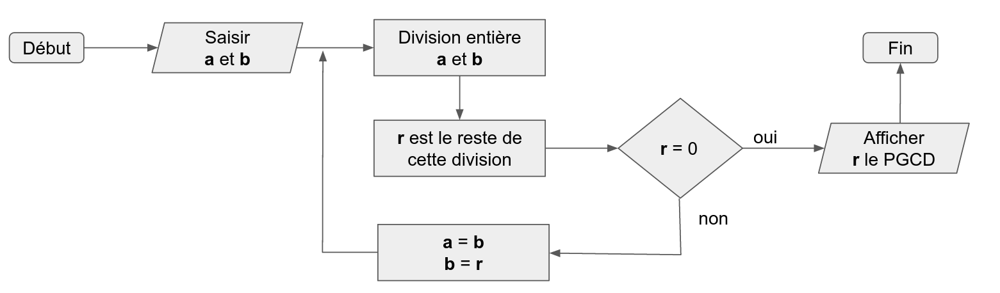

Bienvenue sur cette démonstration qui va vous permettre de construire votre premier programme qui va calculer le PGCD entre 2 nombre
Rappel sur le PGCD
Pour les personnes ayant oublié leurs cours de mathématiques , le PGCD désigne le plus grand diviseur commun entre 2 nombres. Il existe plusieurs méthodes pour calculer ce PGCD. Nous allons nous attarder sur la méthode Euclidienne
Un peu d'histoire

Les mathématiques sont souvent présentées de manière abstraite sans les rapprocher à des cas concrets. Pourtant les mathématiques sont très souvent des outils qui permettent d'aider dans les tâches de la vie courante. Replaçons nous dans le contexte de l'époque (en romançant un petit peu)...
Pétros est un bâtisseur grec et un de ses riches clients vient le voir pour paver sa cours intérieure qui mesure 21 mètres par 15. Sa seule exigence est d'avoir dans sa cours des pavés de forme carré. Pétros doit donc calculer le plus grand diviseur commun entre ces deux longueurs. Il va donc voir Euclide car il ne sait pas du tout comment faire.
Pétros : Bonjour Euclide peux tu m'aider pour que je puisse répondre au problème de mon client ?
Euclide : Bien sûr Pétros. Tu as besoin de trouver le plus petit diviseur commun entre 21 et 15 et pour celà "prends ta calculatrice et fait la division entière en redivisant à chaque fois le diviseur par le reste jusqu'à trouver un reste nul".
Pétros : Euclide je suis bâtisseur et nous sommes en 300 avant JC. Je ne sais pas ce que c'est une calculatrice...
Euclide : Ah oui c'est vrai. Je te propose une autre méthode. Trace un rectangle de 21 par 15. Nous allons diviser ce rectangle.
Euclide : Tu vas construire un carré dans ce rectangle. Il doit être de la dimension de la largeur du rectangle (donc 15 mètres). Tu ne peux en mettre qu'un seul
Euclide : Le but est maintenant d'essayer de redécouper l'espace restant en appliquant la même méthode. Cet espace est maintenant un rectangle de 15 par 6 (6=21-15). Nous pouvons cette fois mettre 2 carrés de 6 par 6 dans cet espace
Euclide : Il nous reste maintenant une zone rectangulaire de 6 mètres par 3 mètres. Appliquons à nouveau notre méthode
Euclide : Au final le carré le plus petit est de 3 mètres par 3 mètres et nous ne pouvons pas rediviser la surface. Nous avons maintenant notre plus petit diviseur commun entre 21 et 15 et c'est le nombre 3
Pétros : Merci Euclide je saurai maintenant me débrouiller tout seul et je sais que je peux poser des carreaux de 30cm par 30cm et que j'en ai besoin de 3500 (5 x 10 x 7 x 10)
Créer un algorithme
Nous venons de voir une méthode assez simple pour calculer le PGCD de 2 nombres entiers. Regardons maintenant comment transformer cette méthode incrémentale en algorithme.
Algorithme
Les algorithmes n'ont pas été inventés par les informaticiens mais théorisés par un grand mathématicien persan Al Khwarizmi (vers l'an 820). C'est ce même mathématicien qui est à l'origine de l'utilisation des nombres arabes dans le Moyen Orient et en Europe. Un algorithme représente une suite d'opérations ou d'instructions finies qui permettent d'arriver à un résultat. Un algorithme peut ensuite être implémenté (réécrit en utilisant un langage de programmation) pour être exécuté par un ordinateur
Essayons maintenant de transformer la méthode euclidienne pour calculer un PGCD en algorithme.
En français
Nous avons deux nombres entiers au départ qui doivent être supérieurs à 0. On les nommera a et b (a étant le plus grand des deux)
Divisons a par b et ne gardons que le reste r = a - ⌊ a / b ⌋
Recommançons cette opération en attribuant b dans a et r dans b jusquà obtenir un reste égal à 0. La dernière valeur de r non nulle est le PGCD
Si nous revenons à notre exemple a=21 et b=15
- Etape 1 : 21/15 = 1 le reste est 6
- Etape 2 : a=15 et b=6 et 15/6 = 2 le reste est 3
- Etape 3 : a=6 et b=3 et 6/3 = 2 le reste est 0, le PGCD est donc 3
Organigramme
Les algorithmes sont parfois représentés sous forme de diagramme. On parle d'organigramme ou de diagramme de flux. Les symboles que vous pouvez utiliser sont assez simple et limités. Voici les principaux


Si on essaye d'utiliser ces annotations pour définir notre algorithme nous aurions par exemple
Maintenant que vous avez lu ce chapitre je peux vous dire que ces notations ne sont jamais utilisées par les développeurs. Elles sont par contre très utiles au départ pour vous aider à structure un programme.
Pseudo code
La dernière façon de décrire nore algorithme est d'utiliser un langage proche de ce que peut comprendre une machine mais ne faisant pas de référence particulière à un langage de programmation. Les instructions sont assez limitées. Nous pouvons :
-
déclarer et affecter des variables
variable a = 10
-
écrire des conditions
Si variable a = 10 Alors ... Sinon ... Fin Si
-
écrire des boucles
Tan que condition Faire ... Fin tant que
-
écrire des fonctions pour regrouper le code
Fonction name ( argument1, argument2 ...) ... Fin fonction
- ...
Les langages de programmation permettent de faire différente opérations sur les nombres manipulés
- + : addition
- - : soustraction
- * : multiplication
- / : division
- % : modulo (reste de la division entière)
- ...
Les opérateurs peuvent nous aider dans les comparaisons
- == : tester égalité
- != : tester si différent
- && : et logique
- || : ou logique
Fonction pgcd(a, b)
Si B == 0 OU SI A == 0 Alors
retourner 0
Fin si
Tant que a * b != 0 Faire
variable r = a % b
Si r !=0 Alors
a = b
b = r
Fin Si
Fin tant que
retourner b
Fin Fonction
A vous de coder
Il ne reste plus qu'à implémenter cet algorithme pour expliquer à la machine comment calculer un PGCD. Il existe de nombreux langages de programmation et nous allons dans notre exemple utilisé le langage Javascript
Voici les correspondances entre le pseudo code et le code Javascript
variable a = 10
var a = 10
Si variable a = 10 Alors ... Sinon ... Fin Si
if(a === 10) {
...
} else {
...
}
Tant que condition Faire ... Fin tant que
while(condition){
...
}
Le mot clé break permet d'interrompre une boucle
Fonction name ( argument1, argument2 ...) ... Fin fonction
function name ( argument1, argument2) {
...
}
Le but maintenant va être de calculer le plus grand diviseur commun entre les nombres que vous saisissez dans les champs suivants
Pour celà vous allez devoir écrire le programme ci dessous pour calculer le PGCD. Pour rappel voici l'organigramme.